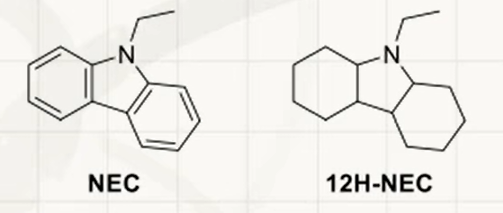
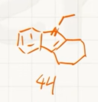

<meta data-alternate="https://freshmark.sunisalex.org/posts/chemistry/competition/2026-summar-vacation-7-12/" data-article="true" data-canonical="https://freshmark.sunisalex.org/en/posts/chemistry/competition/2026-summar-vacation-7-12/" data-description="Hydrogen Storage Technology (39th Session) 6.1 High-pressure hydrogen storage. Compressed hydrogen is currently one of the most commonly used hydrogen storage methods. Hydrogen is" data-freshmark-page data-title="2026 Inorganic Chemistry Summer Training (I) — Freshmark"><main><header class="container article-header"><a href="/en/" class="back-link">← Back to all writing</a><p class="eyebrow article-subject">Chemistry</p><h1>2026 Inorganic Chemistry Summer Training (I)</h1><p class="article-dek">Hydrogen Storage Technology (39th Session) 6.1 High-pressure hydrogen storage. Compressed hydrogen is currently one of the most commonly used hydrogen storage methods. Hydrogen is</p><div class="article-meta"><time datetime="2026-04-19">April 19, 2026</time><span>11 min read</span><span>Chemistry Olympiad · Inorganic Chemistry</span><span class="view-count" data-article-view-count hidden>Article views <strong data-article-views></strong></span><a href="index.md" download>Download Markdown</a><button type="button" class="article-share" data-share-article data-share-text="Hydrogen Storage Technology (39th Session) 6.1 High-pressure hydrogen storage. Compressed hydrogen is currently one of the most commonly used hydrogen storage methods. Hydrogen is" data-share-title="2026 Inorganic Chemistry Summer Training (I)"><span data-share-label>Share article</span></button><output aria-live="polite" class="visually-hidden" data-share-status role="status"></output></div></header><div class="article-wrap"><aside class="toc"><div class="toc-head"><p>On this page</p><button type="button" class="toc-toggle" aria-expanded="false" aria-label="Toggle table of contents" data-toc-toggle><span class="toc-toggle-label">Table of contents</span><span class="toc-toggle-icon" aria-hidden="true"></span></button></div><nav aria-label="Table of contents" class="toc-links" data-toc-links><a href="#hydrogen-storage-technology-39th-session" class="toc-level-1">Hydrogen Storage Technology (39th Session)</a><a href="#inorganic-chemistry-inference-questions-fluorides-and-oxides-of-xenon" class="toc-level-1">Inorganic Chemistry Inference Questions: Fluorides and Oxides of Xenon</a><a href="#1-transcription-of-the-title" class="toc-level-2">1. Transcription of the title</a><a href="#3-1" class="toc-level-3">3-1</a><a href="#3-2" class="toc-level-3">3-2</a><a href="#3-3" class="toc-level-3">3-3</a><a href="#2-3-1-chemical-formulas-of-each-substance" class="toc-level-2">2. 3-1 Chemical formulas of each substance</a><a href="#3-inference-process" class="toc-level-2">3. Inference process</a><a href="#1-judgment-a" class="toc-level-3">1. Judgment A</a><a href="#2-gradual-hydrolysis-of-a" class="toc-level-3">2. Gradual hydrolysis of A</a><a href="#3-determine-e-and-f" class="toc-level-3">3. Determine E and F</a><a href="#4-determine-g-and-h" class="toc-level-3">4. Determine G and H</a><a href="#5-judgment-i" class="toc-level-3">5. Judgment I</a><a href="#6-judgment-j" class="toc-level-3">6. Judgment J</a><a href="#7-judgment-k" class="toc-level-3">7. Judgment K</a><a href="#4-3-2-reaction-equation" class="toc-level-2">4. 3-2 Reaction equation</a><a href="#trim-check" class="toc-level-3">Trim check</a><a href="#5-chain-structure-of-3-3-j" class="toc-level-2">5. Chain structure of 3-3 J</a></nav></aside><article class="prose"><h1 id="hydrogen-storage-technology-39th-session">Hydrogen Storage Technology (39th Session)</h1><p>6.1 High-pressure hydrogen storage. Compressed hydrogen is currently one of the most commonly used hydrogen storage methods. Hydrogen is stored in a container with a pressure maintained at 350~700 bar. Under high pressure, its behavior deviates from an ideal gas and is more suitable to be described by the van der Waals equation <span class="math-expression math-inline" data-math-source="(p + a/V_{\text{m}}^2)(V_{\text{m}} - b) = RT"></span>, where <span class="math-expression math-inline" data-math-source="V_{\text{m}}"></span>&#32;is the molar volume of the gas and <span class="math-expression math-inline" data-math-source="p"></span>&#32;is the gas pressure. For hydrogen, <span class="math-expression math-inline" data-math-source="a = 0.02476\ \text{J}\cdot\text{m}^3\cdot\text{mol}^{-2}"></span>, <span class="math-expression math-inline" data-math-source="b = 2.661 \times 10^{-5}\ \text{m}^3\cdot\text{mol}^{-1}"></span>&#32;in the equation. Tip: <strong>This question requires valid figures</strong>.</p><p>6.1.1 At 293 K, what is the required pressure in bar to achieve the hydrogen storage density of <span class="math-expression math-inline" data-math-source="20.0\ \text{kg}\cdot\text{m}^{-3}"></span>?</p><p>6.1.2 At 293 K, in order to increase the hydrogen storage density from <span class="math-expression math-inline" data-math-source="20.0\ \text{kg}\cdot\text{m}^{-3}"></span>&#32;to <span class="math-expression math-inline" data-math-source="40.0\ \text{kg}\cdot\text{m}^{-3}"></span>, the required pressure ( ) is: (a) 2 times the original; (b) lower than the original 2 times; (c) higher than the original 2 times; (d) cannot be determined.</p><p>6.1.3 The pressure of hydrogen storage tanks in industry is rarely higher than 700 bar. Briefly analyze the reasons.</p><p>6.1.1:</p><p>Remember to keep three significant digits <span class="math-expression math-display" data-math-source="\begin{gathered} V_m=\frac{1}{\frac{\rho}{M}}=\frac{M}{\rho}\\ (p + a/V_{\text{m}}^2)(V_{\text{m}} - b) = RT\\ p = \frac{RT}{V_m-b}-\frac{a}{V_m^2}\\ p = 3.04\times10^7Pa=304bar \end{gathered}" data-math-display></span> 6.1.2</p><p><span class="math-expression math-display" data-math-source="\begin{gathered} p&#39;=\frac{RT}{\frac{V_m}{2}-b}-\frac{a}{(\frac{V_m}{2})^2}=9.26\times10^7=926bar\gt2p \end{gathered}" data-math-display></span> Choose c</p><p>6.1.3 When <span class="math-expression math-inline" data-math-source="p\gt\gt700bar"></span>, <span class="math-expression math-inline" data-math-source="p\gt\gt\frac{a}{b^2}\gt \frac{a}{V_m^2}"></span>&#32;and <span class="math-expression math-inline" data-math-source="\frac{a}{V_m^2}"></span>&#32;can almost be ignored: <span class="math-expression math-display" data-math-source="\begin{gathered} RT\approx p(V_m-b)\\ \frac{M}{\rho}=V_m\approx b+\frac{RT}{p}\to b\\ \rho_{\infty}=\frac{M}{b}=75.8kg\cdot\text{m}^{-3} \end{gathered}" data-math-display></span></p><p>Then calculate the hydrogen storage density at <span class="math-expression math-inline" data-math-source="p=700bar,T=293K"></span>:</p><p><span class="math-expression math-display" data-math-source="\begin{gathered} (p + a/V_{\text{m}}^2)(V_{\text{m}} - b) = RT\\ V_m=\frac{M}{\rho}=5.81\times10^{-5}m^3\cdot mol^{-1}\\ \rho=34.7kg\cdot m^{-3} \end{gathered}" data-math-display></span></p><p>The pressure increases to infinity, but the density only becomes 2.18 times the original, indicating that the increase in pressure is not proportional to the increase in density. Continuing to increase the pressure is not only unsafe, but also requires high equipment and is uneconomical.</p><p>6.2 Liquid phase hydrogen storage. <span class="math-expression math-inline" data-math-source="\text{H}_2"></span>&#32;After liquefaction, it can be stored stably at a pressure of 1~4 bar, but the system needs to maintain an extremely low temperature. It is known that the triple point of hydrogen is <span class="math-expression math-inline" data-math-source="(7.041\ \text{kPa}, -259.35\ ^\circ\text{C})"></span>&#32;and the critical point is <span class="math-expression math-inline" data-math-source="(12.86\ \text{bar}, -240.21\ ^\circ\text{C})"></span>.</p><p>6.2.1 The temperatures at which liquid hydrogen may be observed are: (a) 16 K; (b) 25 K; (c) 77 K; (d) 293 K.</p><p>6.2.2 Calculate the pressure required for <span class="math-expression math-inline" data-math-source="\text{H}_2"></span>&#32;to liquefy at 27.15 K, and explain what approximations are used in the calculation process.</p><p>6.2.3 If the state of liquid hydrogen can also be approximately described by the van der Waals equation, calculate the upper limit of the density of liquid hydrogen. (Unit: <span class="math-expression math-inline" data-math-source="\text{kg}\cdot\text{m}^{-3}"></span>)</p><p>6.2.1 <span class="math-expression math-display" data-math-source="-259.35\ ^\circ\text{C}=13.80K,-240.21\ ^\circ\text{C}=32.94K" data-math-display></span> To observe <span class="math-expression math-inline" data-math-source="\ce{H2(l)}"></span>, the temperature is required to be between the triple point and the critical point, choose (a) (b)</p><p>6.2.2</p><p>It is known that the gas/liquid critical point <span class="math-expression math-inline" data-math-source="(7.041\times10^3\ \text{Pa}, 13.80K),(1.286\times10^6 \text{Pa}, 32.94K)"></span>&#32;is used, then the <strong>Clausius-Clapeyron</strong> equation is used:</p><p><span class="math-expression math-display" data-math-source="\begin{gathered} \ln\frac{p_2}{p_1}=-\frac{\Delta_{vap}H_m}{R}(\frac{1}{T_2}-\frac{1}{T_1})\\ \Delta_{vap}H_m=\frac{R\ln\frac{p_2}{p_1}}{\frac{T_2-T_1}{T_1T_2}}=1.028\times10^3J\cdot mol^{-1}\\ \ln\frac{p_3}{p_1}=-\frac{\Delta_{vap}H_m}{R}(\frac{1}{T_2}-\frac{1}{T_1})\\ p_3 = p_1e^{-\frac{\Delta_{vap}H_m}{R}(\frac{1}{T_2}-\frac{1}{T_1})}=5.774\times10^2kPa \end{gathered}" data-math-display></span></p><p>Approximation taken: -Assume hydrogen is an ideal gas</p><ul><li>Assume molar enthalpy of vaporization is independent of pressure/temperature</li><li><span class="math-expression math-inline" data-math-source="V(l)\lt\lt V(g)"></span></li></ul><p>6.2.3</p><p>At ultra-high pressure, the ultimate density <span class="math-expression math-inline" data-math-source="\rho_{\infty}=\frac{M}{b}=75.8kg\cdot\text{m}^{-3}"></span>&#32;has been calculated in 6.1</p><p>6.3 Organic liquid hydrogen storage. Organic liquid hydrogen storage carriers (LOHCs) have the advantages of high safety and easy transportation. The reversible transformation between N-ethylcarbazole (NEC) and its fully hydrogenated product 12H-NEC makes it a LOHC system with great application prospects.</p><p>6.3.1 The formula quantity of 12H-NEC is 207.36, and the relationship between its density <span class="math-expression math-inline" data-math-source="\rho"></span>&#32;(unit: <span class="math-expression math-inline" data-math-source="\text{g}\cdot\text{cm}^{-3}"></span>) and temperature <span class="math-expression math-inline" data-math-source="T"></span>&#32;(unit: K) is: <span class="math-expression math-display" data-math-source="\rho = 1.1482329 - 0.00070927T" data-math-display></span> , calculate the hydrogen storage density of 12H-NEC at 293.0 K <span class="math-expression math-inline" data-math-source="\text{kg}\cdot\text{m}^{-3}"></span>?</p><p><picture class="responsive-picture"><source srcset="image.freshmark-13e614395b5b-480w.avif 480w, image.freshmark-13e614395b5b-503w.avif 503w" type="image/avif"><source srcset="image.freshmark-13e614395b5b-480w.webp 480w, image.freshmark-13e614395b5b-503w.webp 503w" type="image/webp"></picture></p><p><span class="math-expression math-display" data-math-source="\begin{gathered} \rho = 1.1482329 - 0.00070927\times293.0\\=9.4041679\times10^{-1}g\cdot cm^{-3}\\=9.4041679\times10^2kg\cdot m^{-3}\\ \rho(H)=\frac{\frac{12\rho}{M(12H-NEC)}\times A_r(H)}{1}\\ =5.486\times10^1kg\cdot m^{-3} \end{gathered}" data-math-display></span></p><p>6.3.2 When 12H-NEC is dehydrogenated, two intermediate products, 8H-NEC (product 1) and 4H-NEC (product 2), are produced, which are compounds of NEC plus 8 and 4 hydrogen atoms respectively. Draw the structures of product 1 and product 2 separately. Stereochemistry is not required.</p><p>During dehydrogenation, stable (aromatic) species should be produced as much as possible.</p><p></p><p>6.3.3, 6.3.4: Omitted</p><p>6.4 Porous adsorption hydrogen storage materials. MOF-5 has a specific surface area of ​​thousands of square meters per gram and can store hydrogen through surface adsorption. If the hydrogen adsorption process on the MOF-5 surface, <span class="math-expression math-inline" data-math-source="\Delta H_{\text{ads}} = -5.20\ \text{kJ}\cdot\text{mol}^{-1}"></span>, <span class="math-expression math-inline" data-math-source="\Delta S_{\text{ads}} = -80.3\ \text{J}\cdot\text{mol}^{-1}\cdot\text{K}^{-1}"></span>, is considered to be independent of temperature. The surface adsorption amount <span class="math-expression math-inline" data-math-source="\Gamma"></span>&#32;and <span class="math-expression math-inline" data-math-source="\text{H}_2"></span>&#32;pressure <span class="math-expression math-inline" data-math-source="p"></span>&#32;obey the Langmuir adsorption isotherm: <span class="math-expression math-inline" data-math-source="\Gamma/\Gamma_\infty = Kp/(1 + Kp)"></span>, where <span class="math-expression math-inline" data-math-source="K"></span>&#32;is the equilibrium constant of the surface adsorption reaction, and <span class="math-expression math-inline" data-math-source="\Gamma_\infty"></span>&#32;is a constant.</p><p>6.4.1 The density of MOF-5 is <span class="math-expression math-inline" data-math-source="0.30\ \text{g}\cdot\text{cm}^{-3}"></span>&#32;(including pores in the structure). MOF-5 can adsorb 7.5 wt% hydrogen at 77 K and 100 bar. Calculate the maximum hydrogen storage density (<span class="math-expression math-inline" data-math-source="\text{kg}\cdot\text{m}^{-3}"></span>) that MOF-5 can achieve through surface adsorption at 77 K.</p><p><span class="math-expression math-display" data-math-source="\begin{gathered} \Delta_mG_{ads}=-RT\ln K=\Delta_mH_{\text{ads}}-T\Delta S_{\text{ads}}\\ K=e^{\frac{\Delta S_{\text{ads}}}{R}-\frac{\Delta_mH_{\text{ads}}}{RT}}=2.15\times10^{-1}\\ \frac{\Gamma}{\Gamma_\infty} = \frac{Kp}{1 + Kp}\\ \Gamma_\infty=7.85\times10^{-2}\\ \rho_{\infty}=\frac{\rho(MOF-5)\Gamma_{\infty}}{1}=2.4\times10^1kg\cdot m^{-3} \end{gathered}" data-math-display></span></p><p>6.4.2 In addition to surface adsorption, <span class="math-expression math-inline" data-math-source="\text{H}_2"></span>&#32;can also be stored in the pores of MOF-5. The specific pore volume of MOF-5 is <span class="math-expression math-inline" data-math-source="1.27\ \text{cm}^3\cdot\text{g}^{-1}"></span>. After filling a <span class="math-expression math-inline" data-math-source="1.00\ \text{L}"></span>&#32;hydrogen storage tank with MOF-5 material, calculate how many times the hydrogen storage capacity at 77 K and 100 bar is that of the unfilled MOF-5 material? Assume that the pore volume of MOF-5 does not change after <span class="math-expression math-inline" data-math-source="\text{H}_2"></span>&#32;is adsorbed on the surface, and the <span class="math-expression math-inline" data-math-source="\text{H}_2"></span>&#32;in the pores conforms to the van der Waals equation. <span class="math-expression math-inline" data-math-source="V_{\text{m}} = 6.853 \times 10^{-5}\ \text{m}^3\cdot\text{mol}^{-1}"></span>&#32;at 77 K and 100 bar.</p><p><span class="math-expression math-display" data-math-source="\begin{gathered} V_m=\frac{V}{n(\ce{H2})}\\ n(\ce{H2})=14.59mol\\ m(\ce{H2})=M(\ce{H2})n(\ce{H2})=2.942\times10^1g\\ \rho_0=\frac{m(\ce{H2})}{V}=\frac{2.942\times10^{-2}kg}{10^{-3}}=29.4kg\cdot m^{-3}\\ m(MOF-5)=\rho(MOF-5)V=0.30kg\\ V_{hole}=m(MOF-5)\times1.27\times10^{-3}\ \text{m}^3\cdot\text{kg}^{-1}=3.81\times10^{-4}m^{3}\\ m_{ads}(H_2)=7.5\times10^{-2}m(MOF-5)=2.25\times10^{-2}kg\\ n_{hole}(H_2)=\frac{V_{holes}}{V_m}=5.560mol\\ m_{hole}(\ce{H2})=M(\ce{H2})n_{hole}(\ce{H2})=1.121\times10^{-2}kg\\ \frac{m_{ads}(H_2)+m_{hole}(\ce{H2})}{m(\ce{H2})}=1.15 \end{gathered}" data-math-display></span></p><h1 id="inorganic-chemistry-inference-questions-fluorides-and-oxides-of-xenon">Inorganic Chemistry Inference Questions: Fluorides and Oxides of Xenon</h1><h2 id="1-transcription-of-the-title">1. Transcription of the title</h2><p>Non-metallic hexafluoride <strong>A</strong> is a colorless crystal that is stable at room temperature and has strong oxidizing properties. Gaseous <strong>A</strong> is a single molecule. Due to its slightly distorted structure, its molecular point group is <span class="math-expression math-inline" data-math-source="C_{3v}"></span>.</p><p>The process of <strong>A</strong> reacting with water is a multi-step hydrolysis. As the hydrolysis proceeds, three compounds <strong>B, C, and D</strong> are obtained in sequence. Binary compound <strong>D</strong> is a colorless needle-shaped crystal, which will be strongly decomposed under <span class="math-expression math-inline" data-math-source="25^\circ\mathrm{C}"></span>&#32;to obtain elemental substance <strong>E</strong> and combustion-supporting gas <strong>F</strong>.</p><p><strong>D</strong> is soluble in KOH solution to generate anion <strong>G</strong>; passing <span class="math-expression math-inline" data-math-source="\mathrm{O_3}"></span>&#32;into the dilute solution of <strong>G</strong> will generate another highly oxidizing regular octahedral anion <strong>H</strong>. At 298 K, <strong>H</strong> in acidic media rapidly oxidizes <span class="math-expression math-inline" data-math-source="\mathrm{Mn(II)}"></span>&#32;to <span class="math-expression math-inline" data-math-source="\mathrm{MnO_4^-}"></span>.</p><p><span class="math-expression math-inline" data-math-source="\mathrm{N_2F_2}"></span>&#32;is heated together with <strong>E</strong>, and the main product is <strong>I</strong>. <strong>I</strong> is a colorless solid that sublimates easily at room temperature. At room temperature, <strong>I</strong> reacts strongly in aqueous solution, and a disproportionation reaction occurs, and <strong>D, E, F</strong> and HF can be obtained. But if <strong>I</strong> reacts with water under <span class="math-expression math-inline" data-math-source="-80^\circ\mathrm{C}"></span>, <strong>J</strong> will be obtained.</p><p><strong>J</strong> is a bright yellow non-volatile solid, which slowly decomposes into equal amounts of <strong>C</strong> and <strong>K</strong> under <span class="math-expression math-inline" data-math-source="-15^\circ\mathrm{C}"></span>. <strong>A, I, K</strong> have the same elemental composition.</p><h3 id="3-1">3-1</h3><p>Write the chemical formula of the substance corresponding to the number.</p><h3 id="3-2">3-2</h3><p>If the alkaline aqueous solution of <strong>G</strong> is not passed through <span class="math-expression math-inline" data-math-source="\mathrm{O_3}"></span>, part of <strong>H</strong> will also be produced, and the ratio of the amounts of <strong>E</strong> and <strong>H</strong> in the product is <span class="math-expression math-inline" data-math-source="1:1"></span>. Write an equation for this reaction.</p><h3 id="3-3">3-3</h3><p><strong>J</strong> exists in solids as a chain structure formed by a planar quadrilateral trans structure through shared vertices. Draw a schematic diagram of a chain-like structure containing at least two repeating units.</p><hr><h2 id="2-3-1-chemical-formulas-of-each-substance">2. 3-1 Chemical formulas of each substance</h2><table><thead><tr><th>Number</th><th>Chemical formula</th><th>Name</th></tr></thead><tbody><tr><td>A</td><td><span class="math-expression math-inline" data-math-source="\mathrm{XeF_6}"></span></td><td>Xenon hexafluoride</td></tr><tr><td>B</td><td><span class="math-expression math-inline" data-math-source="\mathrm{XeOF_4}"></span></td><td>Tetrafluoro-xenon oxide</td></tr><tr><td>C</td><td><span class="math-expression math-inline" data-math-source="\mathrm{XeO_2F_2}"></span></td><td>Xenon Difluoride Dioxide</td></tr><tr><td>D</td><td><span class="math-expression math-inline" data-math-source="\mathrm{XeO_3}"></span></td><td>Xenon trioxide</td></tr><tr><td>E</td><td><span class="math-expression math-inline" data-math-source="\mathrm{Xe}"></span></td><td>Xenon</td></tr><tr><td>F</td><td><span class="math-expression math-inline" data-math-source="\mathrm{O_2}"></span></td><td>Oxygen</td></tr><tr><td>G</td><td><span class="math-expression math-inline" data-math-source="\mathrm{HXeO_4^-}"></span></td><td>Hydrogen xenonate</td></tr><tr><td>H</td><td><span class="math-expression math-inline" data-math-source="\mathrm{XeO_6^{4-}}"></span></td><td>Perxenonate</td></tr><tr><td>I</td><td><span class="math-expression math-inline" data-math-source="\mathrm{XeF_4}"></span></td><td>Xenon tetrafluoride</td></tr><tr><td>J</td><td><span class="math-expression math-inline" data-math-source="\mathrm{XeOF_2}"></span></td><td>Xenon difluoride monoxide</td></tr><tr><td>K</td><td><span class="math-expression math-inline" data-math-source="\mathrm{XeF_2}"></span></td><td>Xenon difluoride</td></tr></tbody></table><p>Therefore:</p><p><span class="math-expression math-display" data-math-source="\boxed{
\begin{aligned}
A&amp;=\mathrm{XeF_6}\\
B&amp;=\mathrm{XeOF_4}\\
C&amp;=\mathrm{XeO_2F_2}\\
D&amp;=\mathrm{XeO_3}\\
E&amp;=\mathrm{Xe}\\
F&amp;=\mathrm{O_2}\\
G&amp;=\mathrm{HXeO_4^-}\\
H&amp;=\mathrm{XeO_6^{4-}}\\
I&amp;=\mathrm{XeF_4}\\
J&amp;=\mathrm{XeOF_2}\\
K&amp;=\mathrm{XeF_2}
\end{aligned}
}" data-math-display></span></p><hr><h2 id="3-inference-process">3. Inference process</h2><h3 id="1-judgment-a">1. Judgment A</h3><p>A is hexafluoride, the gaseous molecule is slightly distorted, the point group is <span class="math-expression math-inline" data-math-source="C_{3v}"></span>, and it has strong oxidizing property, therefore:</p><p><span class="math-expression math-display" data-math-source="\boxed{A=\mathrm{XeF_6}}" data-math-display></span></p><hr><h3 id="2-gradual-hydrolysis-of-a">2. Gradual hydrolysis of A</h3><p>During the stepwise hydrolysis of xenon hexafluoride, two F atoms are replaced by one O atom at each step and two molecules of HF are produced.</p><p>Step one:</p><p><span class="math-expression math-display" data-math-source="\mathrm{XeF_6+H_2O\rightarrow XeOF_4+2HF}" data-math-display></span></p><p>So:</p><p><span class="math-expression math-display" data-math-source="\boxed{B=\mathrm{XeOF_4}}" data-math-display></span></p><p>Step two:</p><p><span class="math-expression math-display" data-math-source="\mathrm{XeOF_4+H_2O\rightarrow XeO_2F_2+2HF}" data-math-display></span></p><p>So:</p><p><span class="math-expression math-display" data-math-source="\boxed{C=\mathrm{XeO_2F_2}}" data-math-display></span></p><p>Step three:</p><p><span class="math-expression math-display" data-math-source="\mathrm{XeO_2F_2+H_2O\rightarrow XeO_3+2HF}" data-math-display></span></p><p>So:</p><p><span class="math-expression math-display" data-math-source="\boxed{D=\mathrm{XeO_3}}" data-math-display></span></p><p>The overall response is:</p><p><span class="math-expression math-display" data-math-source="\mathrm{XeF_6+3H_2O\rightarrow XeO_3+6HF}" data-math-display></span></p><hr><h3 id="3-determine-e-and-f">3. Determine E and F</h3><p>Xenon trioxide decomposes to form elemental xenon and oxygen:</p><p><span class="math-expression math-display" data-math-source="\mathrm{2XeO_3\rightarrow 2Xe+3O_2}" data-math-display></span></p><p>Therefore:</p><p><span class="math-expression math-display" data-math-source="\boxed{E=\mathrm{Xe}}" data-math-display></span></p><p><span class="math-expression math-display" data-math-source="\boxed{F=\mathrm{O_2}}" data-math-display></span></p><p>Oxygen has combustion-supporting properties, which is consistent with the question conditions.</p><hr><h3 id="4-determine-g-and-h">4. Determine G and H</h3><p>Xenon trioxide dissolves in KOH solution to form hydrogen xenonate:</p><p><span class="math-expression math-display" data-math-source="\mathrm{XeO_3+OH^-\rightarrow HXeO_4^-}" data-math-display></span></p><p>Therefore:</p><p><span class="math-expression math-display" data-math-source="\boxed{G=\mathrm{HXeO_4^-}}" data-math-display></span></p><p>G is further oxidized by ozone to generate perxenate radical with xenon <span class="math-expression math-inline" data-math-source="+8"></span>&#32;valence:</p><p><span class="math-expression math-display" data-math-source="\boxed{H=\mathrm{XeO_6^{4-}}}" data-math-display></span></p><p>There are six O around Xe in <span class="math-expression math-inline" data-math-source="\mathrm{XeO_6^{4-}}"></span>, and the spatial configuration is a regular octahedron.</p><p>The ozone oxidation reaction can be written as:</p><p><span class="math-expression math-display" data-math-source="\mathrm{HXeO_4^-+O_3+3OH^-
\rightarrow XeO_6^{4-}+O_2+2H_2O}" data-math-display></span></p><hr><h3 id="5-judgment-i">5. Judgment I</h3><p><span class="math-expression math-inline" data-math-source="\mathrm{N_2F_2}"></span>&#32;is heated with xenon to mainly generate xenon tetrafluoride:</p><p><span class="math-expression math-display" data-math-source="\mathrm{2N_2F_2+Xe\rightarrow XeF_4+2N_2}" data-math-display></span></p><p>Therefore:</p><p><span class="math-expression math-display" data-math-source="\boxed{I=\mathrm{XeF_4}}" data-math-display></span></p><p>Xenon tetrafluoride is a colorless solid that sublimates easily, which is consistent with the description of the question.</p><p>At room temperature, xenon tetrafluoride undergoes a disproportionation reaction with water:</p><p><span class="math-expression math-display" data-math-source="\mathrm{6XeF_4+12H_2O
\rightarrow 2XeO_3+4Xe+3O_2+24HF}" data-math-display></span></p><p>Products include:</p><p><span class="math-expression math-display" data-math-source="\mathrm{XeO_3,\ Xe,\ O_2,\ HF}" data-math-display></span></p><p>That is D, E, F and HF in the question.</p><hr><h3 id="6-judgment-j">6. Judgment J</h3><p>At <span class="math-expression math-inline" data-math-source="-80^\circ\mathrm{C}"></span>, xenon tetrafluoride undergoes partial hydrolysis:</p><p><span class="math-expression math-display" data-math-source="\mathrm{XeF_4+H_2O\rightarrow XeOF_2+2HF}" data-math-display></span></p><p>Therefore:</p><p><span class="math-expression math-display" data-math-source="\boxed{J=\mathrm{XeOF_2}}" data-math-display></span></p><hr><h3 id="7-judgment-k">7. Judgment K</h3><p>J slowly decomposes into equal amounts of C and K at <span class="math-expression math-inline" data-math-source="-15^\circ\mathrm{C}"></span>:</p><p><span class="math-expression math-display" data-math-source="\mathrm{2XeOF_2\rightarrow XeO_2F_2+XeF_2}" data-math-display></span></p><p>Due to:</p><p><span class="math-expression math-display" data-math-source="C=\mathrm{XeO_2F_2}" data-math-display></span></p><p>So:</p><p><span class="math-expression math-display" data-math-source="\boxed{K=\mathrm{XeF_2}}" data-math-display></span></p><p>At the same time:</p><p><span class="math-expression math-display" data-math-source="A=\mathrm{XeF_6},\qquad
I=\mathrm{XeF_4},\qquad
K=\mathrm{XeF_2}" data-math-display></span></p><p>All three contain only two elements, Xe and F, and meet the condition that &quot;A, I, and K have the same elemental composition&quot;.</p><hr><h2 id="4-3-2-reaction-equation">4. 3-2 Reaction equation</h2><p>Known:</p><p><span class="math-expression math-display" data-math-source="G=\mathrm{HXeO_4^-}" data-math-display></span></p><p><span class="math-expression math-display" data-math-source="H=\mathrm{XeO_6^{4-}}" data-math-display></span></p><p><span class="math-expression math-display" data-math-source="E=\mathrm{Xe}" data-math-display></span></p><p>In alkaline aqueous solution, part of the <span class="math-expression math-inline" data-math-source="+6"></span>&#32;valence xenon is oxidized to <span class="math-expression math-inline" data-math-source="+8"></span>&#32;valence, and the other part is reduced to elemental xenon, and oxygen is generated at the same time.</p><p>Balance to get:</p><p><span class="math-expression math-display" data-math-source="\boxed{
\mathrm{2HXeO_4^-+2OH^-
\rightarrow XeO_6^{4-}+Xe+O_2+2H_2O}
}" data-math-display></span></p><h3 id="trim-check">Trim check</h3><p>Conservation of atoms:</p><ul><li>Xe: <span class="math-expression math-inline" data-math-source="2=1+1"></span></li><li>H： <span class="math-expression math-inline" data-math-source="2+2=4"></span></li><li>O： <span class="math-expression math-inline" data-math-source="8+2=6+2+2"></span></li></ul><p>Conservation of charge:</p><p><span class="math-expression math-display" data-math-source="-2-2=-4" data-math-display></span></p><p>Right side:</p><p><span class="math-expression math-display" data-math-source="-4" data-math-display></span></p><p>and:</p><p><span class="math-expression math-display" data-math-source="n(E):n(H)
=
n(\mathrm{Xe}):n(\mathrm{XeO_6^{4-}})
=
1:1" data-math-display></span></p><p>Meet the topic requirements.</p><hr><h2 id="5-chain-structure-of-3-3-j">5. Chain structure of 3-3 J</h2><p>J is:</p><p><span class="math-expression math-display" data-math-source="\mathrm{XeOF_2}" data-math-display></span></p><p>In solids, each <span class="math-expression math-inline" data-math-source="\mathrm{XeOF_2}"></span>&#32;unit shares vertices through O atoms, forming a chain-like structure. The two O's surrounding each Xe are in trans position, as are the two F's.</p><p>The schematic diagram is as follows:</p><pre><code class="language-text">        F             F             F
        |             |             |
··· — O — Xe — O — Xe — O — Xe — O — ···
        |             |             |
        F             F             F
</code></pre><p>At least two repeating units can be written as:</p><pre><code class="language-text">        F             F
        |             |
— O — Xe — O — Xe — O —
        |             |
        F             F
</code></pre><p>The chain repeating unit can be expressed as:</p><p><span class="math-expression math-display" data-math-source="\boxed{\left[-\mathrm{O-XeF_2-}\right]_n}" data-math-display></span></p><p>Adjacent planar quadrilaterals are connected through O vertices.</p></article></div><section class="container comments" data-comments data-comments-path="/en/posts/chemistry/competition/2026-summar-vacation-7-12/"><div class="comments-head"><div><p class="eyebrow">Comments</p><h2 data-comments-title>Comments</h2></div><p>Sign in to join the discussion. Email is verified only when you register.</p></div><div class="comment-list" aria-live="polite" data-comment-list><p class="comment-state" data-comment-state>Loading comments…</p></div><button type="button" class="comment-more" data-comments-more hidden>Load older comments</button><div class="comment-auth" data-comment-auth><p class="comment-auth-status" data-auth-loading>Checking your session…</p><div hidden data-auth-guest><form class="comment-auth-form" data-auth-login><h3>Sign in to comment</h3><label>Email<input autocomplete="email" name="email" maxlength="254" required type="email"></label><label>Password<input autocomplete="current-password" name="password" maxlength="128" required type="password"></label><div class="comment-form-foot"><p class="comment-form-status" role="status" data-auth-login-status></p><button type="submit">Sign in</button></div></form><details class="comment-register"><summary>Need an account? Register</summary><form class="comment-auth-form" data-auth-register><label>Name<input autocomplete="name" name="name" maxlength="40" required></label><label>Email<input autocomplete="email" name="email" maxlength="254" required type="email"></label><label>Password<input autocomplete="new-password" name="password" maxlength="128" required type="password" minlength="8"></label><p class="comment-auth-hint">Use at least 8 characters.</p><div class="comment-form-foot"><p class="comment-form-status" role="status" data-auth-register-status></p><button type="submit">Register</button></div></form></details></div><form class="comment-auth-form" hidden data-auth-verify><p>We sent a code to your email. Complete registration within 10 minutes.</p><label>Six-digit code<input autocomplete="one-time-code" name="code" maxlength="6" required minlength="6" inputmode="numeric" pattern="[0-9]{6}"></label><div class="comment-form-foot"><p class="comment-form-status" role="status" data-auth-verify-status></p><button type="submit">Complete registration</button></div></form><div class="comment-auth-user" data-auth-user hidden><p>Signed in as <strong data-auth-user-name></strong> <span data-auth-user-email></span></p><button type="button" data-auth-logout>Sign out</button></div></div><form class="comment-form" hidden data-comment-form><label>Comment<textarea maxlength="2000" minlength="2" name="body" placeholder="Share your thoughts…" required rows="5"></textarea></label><p class="comment-markdown-hint">Markdown supported: emphasis, links, quotes, lists, and code.</p><label aria-hidden="true" class="comment-honeypot">Website<input autocomplete="off" name="website" tabindex="-1"></label><div class="comment-form-foot"><p class="comment-form-status" role="status" data-comment-form-status></p><button type="submit" data-comment-submit>Post comment</button></div></form></section></main>